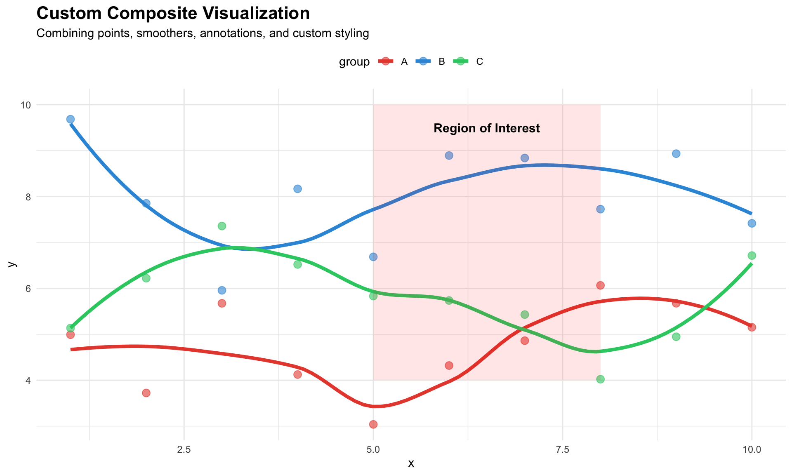
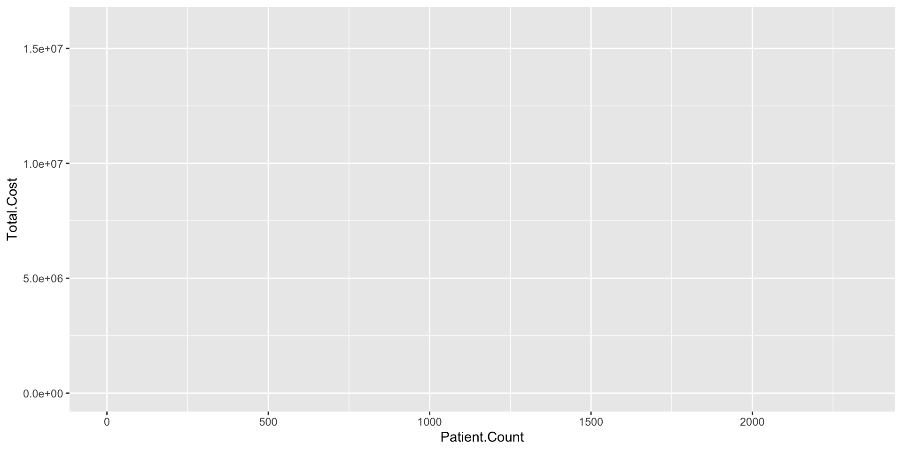
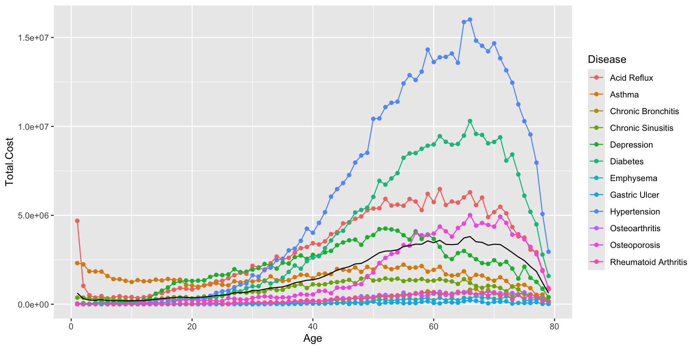

library(ggplot2)
library(dplyr)
library(ggiraph)
# Create hierarchical product sales data
products <- data.frame(
category = c(rep("Electronics", 6), rep("Furniture", 5),
rep("Office", 4), rep("Software", 5), rep("Services", 4)),
product = c("Laptops", "Tablets", "Phones", "Monitors", "Cameras", "Headphones",
"Desks", "Chairs", "Tables", "Cabinets", "Lamps",
"Pens", "Paper", "Staplers", "Binders",
"OS", "Productivity", "Design", "Database", "Security",
"Consulting", "Training", "Support", "Installation"),
revenue = c(450, 320, 580, 210, 180, 95,
280, 340, 190, 150, 85,
45, 120, 35, 60,
380, 290, 250, 420, 340,
520, 310, 280, 190),
growth = c(15, 22, 8, 12, 18, 25, 18, 25, 10, 5, 12,
-2, 8, 3, 7, 28, 32, 22, 19, 24, 35, 18, 22, 15)
)
# Calculate category-level positions first
categories <- products %>%
group_by(category) %>%
summarise(cat_total = sum(revenue), .groups = 'drop') %>%
mutate(cat_fraction = cat_total / sum(cat_total),
cat_end = cumsum(cat_fraction),
cat_start = lag(cat_end, default = 0),
mid = (cat_start + cat_end) / 2,
tooltip = paste0("<b>", category, "</b><br/>",
"Total Revenue: $", cat_total, "K<br/>",
"Share: ", round(cat_fraction * 100, 1), "%"),
data_id = category)
# Calculate product positions within each category
products <- products %>%
left_join(categories %>% select(category, cat_start, cat_end, cat_total),
by = "category") %>%
group_by(category) %>%
mutate(product_fraction = revenue / sum(revenue),
prod_end = cat_start + cumsum(product_fraction) * (cat_end - cat_start),
prod_start = lag(prod_end, default = first(cat_start)),
tooltip = paste0("<b>", product, "</b><br/>",
"Category: ", category, "<br/>",
"Revenue: $", revenue, "K<br/>",
"Growth: ", growth, "%"),
data_id = category,
onclick = paste0("alert('", product, ": $", revenue, "K')")) %>%
ungroup()
# Plot interactive sunburst
p <- ggplot() +
# Inner ring - Categories (interactive)
geom_rect_interactive(data = categories,
aes(xmin = 1, xmax = 2, ymin = cat_start, ymax = cat_end,
fill = cat_total,
tooltip = tooltip,
data_id = data_id),
color = "white", linewidth = 1.5) +
# Outer ring - Products (interactive)
geom_rect_interactive(data = products,
aes(xmin = 2, xmax = 3, ymin = prod_start, ymax = prod_end,
fill = revenue, alpha = growth/50,
tooltip = tooltip,
data_id = data_id),
color = "white", linewidth = 0.8) +
# Category labels
geom_text(data = categories,
aes(x = 1.5, y = mid, label = category),
size = 3.5, fontface = "bold", color = "white") +
# Product labels
geom_text(data = products,
aes(x = 3.2, y = (prod_start + prod_end)/2, label = product),
size = 2.2, hjust = 0, color = "gray20") +
scale_fill_gradient2(low = "lightblue", mid = "steelblue", high = "navy",
midpoint = 250, name = "Revenue ($K)") +
scale_alpha_continuous(range = c(0.5, 1), guide = "none") +
coord_polar(theta = "y") +
xlim(0, 4) +
theme_void() +
theme(legend.position = "right",
plot.title = element_text(hjust = 0.5, size = 16, face = "bold"),
plot.subtitle = element_text(hjust = 0.5, size = 11)) +
labs(title = "Company Sales by Category and Product (Interactive Sunburst)",
subtitle = "Hover for details and to highlight a category")
# Create interactive plot
girafe(ggobj = p, width_svg = 11, height_svg = 11,
options = list(
opts_hover(css = "fill:orange;stroke:black;stroke-width:2px;"),
opts_selection(type = "multiple", css = "fill:orange;stroke:black;stroke-width:2px;"),
opts_tooltip(css = "background-color:white;padding:10px;border-radius:5px;box-shadow:3px 3px 5px rgba(0,0,0,0.3);")
))A Taxonomy of Visualization Tools
A Framework for Understanding Visualization Tools
Todd R Johnson
Objective
To present a framework of dimensions for categorizing, evaluating, and selecting visualization tools
Why do we need this?
Visualization tools make fundamentally different trade-offs that affect:
- How we work with them
- What we can create
- How we scale our work
Let’s examine three critical examples…
Example 1: User Interface
Excel (GUI)
Task: Create sales chart for Q4
- Select data range
- Click “Insert Chart”
- Choose “Column Chart”
- Drag “Month” to X-axis
- Drag “Sales” to Y-axis
- Adjust colors, labels
Pros: Immediate visual feedback, no coding
Cons: Manual process for each new dataset
User Interface: The Real Impact
Scenario: Your company has 50 regional offices
- GUI approach: Manually create 50 separate charts (hours of repetitive work)
- Any design change? Redo all 50 charts manually
- Quality control? Manually verify each one
- Declarative approach: Run the same code on 50 datasets (minutes)
- Design change? Update code once, regenerate all 50
- Quality control? Automated and consistent
- The trade-off: Short-term ease of use vs. long-term scalability
Example 2: Expressiveness
Chart Library (Excel)
Available charts:
- Bar/Column
- Line
- Pie
- Scatter
- Area
- ~20 predefined types
What if you need:
- Custom radial visualization?
- Nested treemap with custom interactions?
- Parallel coordinates plot?
Answer: You can’t (without plugins/extensions)
Grammar-based Tool (ggplot2/D3)
Available charts: Whatever you can specify
- All standard chart types
- Custom geometries
- Novel visualizations
- Complex compositions
Same custom needs?
Answer: Compose from primitives
- Define custom coordinates
- Create custom geoms/marks
- Combine layers creatively
Expressiveness: The Real Impact
Scenario: You need to visualize hierarchical data with custom emphasis
Chart Library Limitation:
"We need a sunburst chart with the ability to
highlight categories and show multiple
metrics simultaneously."
→ Not available in Excel/standard tools
→ Wait for vendor to add it?
→ Switch tools entirely?Grammar-based Flexibility:
# Compose exactly what you need
ggplot(hierarchy_data) +
geom_tile(aes(x = level, y = category,
fill = primary_metric, alpha = secondary_metric)) +
coord_polar() +
custom_highlight_layer(paths_to_emphasize)The trade-off: Ease of use vs. creative flexibility
Expressiveness: Live Example
Creating a hierarchical radial visualization with ggplot2:
This demonstrates: Composing custom visualizations from grammar primitives
Expressiveness: Live Example
Example 3: Data Requirements
Tool A: Excel/Google Sheets
Data workflow:
- Export database query to CSV
- Download CSV file
- Open in Excel
- Create visualization
- Data updated? Repeat steps 1-4
Supported formats: CSV, Excel, manual entry
Tool B: Tableau
Data workflow:
- Connect directly to SQL database (or other DBs, CSV, Excel, etc)
- Select tables (supports joins, unions, etc)
- Create visualization (can create new calculations, blends, etc. without changing source data)
- Data updated? Click refresh
Supported formats: Databases, cloud services, files, APIs
Tool C: R + ggplot2
Data workflow: Flexible. Data source neutral. Sample SQL DB Connection:
library(DBI)
library(RSQLite)
library(ggplot2)
library(dplyr)
# 1. Create an in-memory SQLite database
con <- dbConnect(RSQLite::SQLite(), ":memory:")
# 2. Create and populate a sales table
dbExecute(con, "CREATE TABLE sales (month TEXT, region TEXT,
revenue INTEGER, units INTEGER)")
# Insert sample data
sales_data <- data.frame(
month = rep(c("Jan", "Feb", "Mar", "Apr", "May", "Jun"), each = 3),
region = rep(c("North", "South", "West"), 6),
revenue = c(450, 380, 520, 480, 420, 560, 510, 460, 590,
530, 490, 610, 560, 520, 640, 590, 550, 670),
units = c(45, 38, 52, 48, 42, 56, 51, 46, 59,
53, 49, 61, 56, 52, 64, 59, 55, 67)
)
dbWriteTable(con, "sales", sales_data, append = TRUE)
# 3. Query the database
query <- "SELECT region, month, revenue, units FROM sales
WHERE revenue > 400 ORDER BY month, region"
data <- dbGetQuery(con, query)
# 4. Create visualization directly from database query
ggplot(data, aes(x = factor(month,
levels = c("Jan", "Feb", "Mar", "Apr", "May", "Jun")),
y = revenue, fill = region)) +
geom_col(position = "dodge") +
geom_text(aes(label = paste0("$", revenue, "K")),
position = position_dodge(width = 0.9), vjust = -0.5, size = 3) +
scale_fill_manual(values = c("North" = "steelblue", "South" = "coral",
"West" = "seagreen")) +
labs(title = "Regional Sales Performance (Revenue > $400K)",
x = "Month", y = "Revenue ($K)", fill = "Region") +
theme_minimal()
dbDisconnect(con)Supported formats: Any database, API, file format, or data source accessible via code
Tool C: R + ggplot + SQL Result
[1] 0
Data Requirements: The Real Impact
Scenario: Weekly sales dashboard from live database
- CSV Export approach (Excel basic):
- Manual export every week
- Risk of using outdated data
- Multiple files to manage
- Time: ~30 minutes/week
- Direct connection (Tableau Server/Power BI):
- Automated Pipeline, Can combine multiple sources
- Always current data
- No manual steps
- Time: ~0 minutes/week (after setup)
- Programmatic access (Python/R):
- Automated pipeline, Can combine multiple sources
- Can add custom transformations and visualizations
- Time: ~0 minutes/week (after pipeline setup)
The trade-off: Simplicity vs. data integration capabilities
Why These Differences Matter
These three examples illustrate fundamental trade-offs:
- Interface Paradigm: Immediate productivity vs. long-term scalability
- Expressiveness: Ease of use vs. customizability
- Data Abstraction: Simple setup vs. powerful integration
The key insight: Different projects have different needs
- One-time analysis → GUI tools excel
- Repeated analysis (or reproducibility)→ Declarative tools excel
- Standard charts → Chart libraries excel
- Novel visualizations → Grammars excel
- Simple data → Manual import works
- Complex data pipelines → Direct connections essential
We need a comprehensive framework to understand all these trade-offs
Heer’s Original Taxonomy (Heer and Shneiderman 2012; Heer 2019)
flowchart TB
A["Graphics APIs<br/>(Processing, OpenGL)"]
B["Component Architectures<br/>(Prefuse, VTK)"]
C["Visualization Grammars<br/>(D3.js, Protovis)"]
D["Visual Analysis Grammars<br/>(ggplot2, Tableau)"]
E["Chart Libraries<br/>(Excel, Plotly Express)"]
A --> B
B --> C
C --> D
D --> E
Primarily reflects: Abstraction Level (and Ease of Use) + Expressiveness
Beyond Heer: Why More Dimensions?
Example: Tableau vs. ggplot2
- Both are at the same Abstraction Level (Visual Analysis Grammars in Heer’s taxonomy)
- Both have Theoretical Foundations (VizQL vs. Grammar of Graphics)
- But they differ across multiple other dimensions:
- Ease of Use: Tableau (high) vs. ggplot2 (medium - requires programming)
- Expressiveness: Tableau (high) vs. ggplot2 (higher - can drop to graphic primitives)
- Reusability: Tableau (low - manual GUI) vs. ggplot2 (high - code templates)
- Interface Paradigm: Tableau (GUI drag-and-drop) vs. ggplot2 (declarative code)
- Cost: Tableau (commercial) vs. ggplot2 (free/open-source)
Note: While Tableau sometimes allows custom visualizations (e.g., Sankey plots), accessing primitives is much harder and more limited than in ggplot2
The Ten Dimensions
- Abstraction Level
- Expressiveness
- Ease of Use
- Interaction Capabilities
- Data Abstraction
- Reusability
- Interface Paradigm
- Theoretical Foundation
- Dissemination/Collaboration
- Cost
Dimension Definitions
Abstraction Level: How much of the visualization pipeline is handled automatically
Expressiveness: The range of visual designs and customizations possible within the tool’s constraints
Ease of Use: How quickly users can become productive and create visualizations without extensive training
Interaction Capabilities: The sophistication of cross-chart filtering, linking, and dynamic behaviors supported
Dimension Definitions (cont.)
Data Abstraction: The tool’s ability to connect to and work with diverse data sources without manual preprocessing
Reusability: How easily visualization logic can be applied to new datasets or replicated across contexts
Interface Paradigm: Whether users specify visualizations through code/markup (declarative) or point-and-click interfaces (GUI)
Theoretical Foundation: Whether the tool is based on formal visualization theories versus pragmatic collections of chart types
Dissemination/Collaboration: The tool’s options for disseminating and/or collaborating on visualizations
Cost: Overall cost to use the tool and disseminate viualizations
Exploring Each Dimension
Let’s examine each of the 10 dimensions in detail with concrete examples…
1. Abstraction Level
Definition: How much of the visualization pipeline is handled automatically
Low Abstraction (OpenGL/Processing)
// Manually handle every pixel
for (int i = 0; i < dataPoints; i++) {
float x = map(data[i].x, minX, maxX, 0, width);
float y = map(data[i].y, minY, maxY, height, 0);
ellipse(x, y, 5, 5);
}
// Must handle: scaling, coordinate systems,
// rendering, colors, legends, axes...You control: Everything
You must specify: Everything
High Abstraction (Excel/Tableau)
- Select data
- Click “Insert Chart” or “Show Me”
- Choose chart type
- Done
Automatic: Scales, axes, colors, legends, layout
Trade-off: Less control, faster creation
2. Expressiveness
Definition: The range of visual designs and customizations possible
library(ggplot2)
# Create sample data
data <- data.frame(
x = rep(1:10, 3),
y = c(rnorm(10, 5, 1), rnorm(10, 8, 1.5), rnorm(10, 6, 0.8)),
group = rep(c("A", "B", "C"), each = 10)
)
# High expressiveness: custom annotation layer
ggplot(data, aes(x = x, y = y, color = group)) +
geom_point(size = 3, alpha = 0.6) +
geom_smooth(method = "loess", se = FALSE, linewidth = 1.5) +
annotate("rect", xmin = 5, xmax = 8, ymin = 4, ymax = 10,
alpha = 0.1, fill = "red") +
annotate("text", x = 6.5, y = 9.5, label = "Region of Interest",
size = 4, fontface = "bold") +
scale_color_manual(values = c("A" = "#e74c3c", "B" = "#3498db", "C" = "#2ecc71")) +
labs(title = "Custom Composite Visualization",
subtitle = "Combining points, smoothers, annotations, and custom styling") +
theme_minimal() +
theme(legend.position = "top",
plot.title = element_text(face = "bold", size = 16))2. Expressiveness

3. Ease of Use
Definition: How quickly users can become productive
| Tool | Learning Curve | First Chart | Complex Chart |
|---|---|---|---|
| Excel | Hours | Minutes | Hours |
| Tableau | Days | Minutes | Hours |
| ggplot2 | Weeks | Hours | Days |
| D3.js | Months | Days | Weeks |
| OpenGL | Months+ | Weeks | Months |
Key insight: Ease of use inversely correlates with expressiveness and control
4. Interaction Capabilities
Definition: Sophistication of filtering, linking, and dynamic behaviors
Limited (ggplot2/static)
- Hover tooltips (with packages)
- Basic click events
- Mostly static output
High (Tableau)
- Drag-to-filter
- Cross-chart filtering
- Parameter controls
- Dashboard actions
Maximum (D3.js/Vega-Lite)
- Custom event handlers
- Coordinated multiple views
- Animated transitions
- Real-time data updates
- Programmatic control over everything
Example we saw earlier: Interactive sunburst chart with ggiraph
4. Interaction Capabilities: D3.js
Explore the D3.js data visualization library:
4. Interaction Capabilities: D3.js Example
Brush selection with cross-filtering:
Requires ~100+ lines of custom JavaScript for brush handling, filtering, and coordinated updates.
This took multiple rounds of prompting in Claude Code plus debugging in the Chrome console to get right. Estimated time: ~ 30 minutes.
Most visualization packages lack appropriate interaction abstractions making them hard for humans and AI to use.
4. Interaction Capabilities: D3.js Code
Brush selection with cross-filtering (66 lines of JavaScript):
// Setup scales, axes, and SVG containers
const margin = {top: 20, right: 20, bottom: 50, left: 70};
const width = 380 - margin.left - margin.right;
const height = 280 - margin.top - margin.bottom;
const scatterSvg = d3.select("#d3-scatter")
.append("svg")
.attr("width", width + margin.left + margin.right)
.attr("height", height + margin.top + margin.bottom)
.append("g")
.attr("transform", `translate(${margin.left},${margin.top})`);
// Create brush for selection
const brush = d3.brush()
.extent([[0, 0], [width, height]])
.on("brush", brushed)
.on("end", brushed);
scatterSvg.append("g").attr("class", "brush").call(brush);
// Custom event handler for brush interaction
function brushed() {
const selection = d3.brushSelection(this);
if (!selection) {
scatterSvg.selectAll("circle")
.attr("fill", d => colorScale(d.Origin));
updateBars(cars);
return;
}
const [[x0, y0], [x1, y1]] = selection;
const filtered = cars.filter(d => {
const x = xScale(d.Horsepower);
const y = yScale(d.Miles_per_Gallon);
return x >= x0 && x <= x1 && y >= y0 && y <= y1;
});
scatterSvg.selectAll("circle")
.attr("fill", d => {
const x = xScale(d.Horsepower);
const y = yScale(d.Miles_per_Gallon);
const inBrush = x >= x0 && x <= x1 && y >= y0 && y <= y1;
return inBrush ? colorScale(d.Origin) : "lightgray";
});
updateBars(filtered);
}
// Update bar chart based on filtered data
function updateBars(filteredData) {
const counts = {};
filteredData.forEach(d => {
counts[d.Origin] = (counts[d.Origin] || 0) + 1;
});
const barData = ["USA", "Europe", "Japan"].map(origin => ({
origin: origin,
count: counts[origin] || 0
}));
barSvg.selectAll(".bar")
.data(barData, d => d.origin)
.transition()
.duration(200)
.attr("width", d => xBarScale(d.count));
}Note: Total implementation requires ~150 lines including data setup, scale creation, axes, and SVG configuration
4. Interaction Capabilities: Vega-Lite
Explore the Vega-Lite visualization grammar:
4. Live Vega-Lite Interaction
Try it: Drag to select points on the scatter plot and watch the bar chart update!
4. Interaction Capabilities: Vega-Lite Example
Cross-filtering with brush selection:
import altair as alt
from vega_datasets import data
# Load cars dataset
cars = data.cars()
# Create a brush selection
brush = alt.selection_interval(name='brush')
# Scatter plot with brush selection
scatter = alt.Chart(cars).mark_point().encode(
x=alt.X('Horsepower:Q', scale=alt.Scale(zero=False)),
y=alt.Y('Miles_per_Gallon:Q', scale=alt.Scale(zero=False)),
color=alt.condition(brush, 'Origin:N', alt.value('lightgray')),
size=alt.value(60)
).properties(
width=400,
height=300,
title='Select cars by dragging on the scatter plot'
).add_params(brush)
# Bar chart filtered by brush selection
bars = alt.Chart(cars).mark_bar().encode(
x='count():Q',
y='Origin:N',
color='Origin:N'
).transform_filter(
brush
).properties(
width=400,
height=300,
title='Count of selected cars by origin'
)
# Combine side-by-side
scatter | barsDemonstrates: Declarative interaction specification - no custom event handlers needed!
5. Data Abstraction
Definition: Ability to connect to diverse data sources. Also: ability to create visualizations without modifying original data source
Level 1: Manual Entry Only - Excel (basic), Google Sheets - Copy-paste or type data
Level 2: File Import - Excel (advanced), most GUI tools - CSV, JSON, Excel files
Level 3: Direct Database Connection - Tableau, Power BI, R/Python - SQL databases, cloud services
Level 4: Programmatic Access - R/Python with packages - APIs, web scraping, streaming data, any custom source
Important Limitations:
- Browser-based JavaScript libraries (D3.js, Vega-Lite, Protovis) only work with JavaScript data structures - require data preprocessed to JSON/arrays
- Graphics APIs (Processing, OpenGL, Java2D) work with in-memory data only - no native database connectivity
- These tools require external data pipelines or preprocessing to connect to databases
6. Reusability
Definition: How easily visualization logic can be applied to new datasets
library(DBI)
library(RSQLite)
library(visNetwork)
# Create a REUSABLE database schema visualization function
visualize_db_schema <- function(db_conn, title) {
# Get all tables
tables <- dbListTables(db_conn)
# Create nodes (one per table)
nodes <- data.frame(
id = tables,
label = tables,
title = sapply(tables, function(t) {
cols <- dbListFields(db_conn, t)
paste0("<b>", t, "</b><br>Columns: ", paste(cols, collapse=", "))
}),
color = "#97C2FC",
shape = "box"
)
# Find relationships (foreign keys)
edges <- data.frame(from = character(), to = character(), title = character())
for(table in tables) {
fks <- dbGetQuery(db_conn, paste0("PRAGMA foreign_key_list(", table, ")"))
if(nrow(fks) > 0) {
for(i in 1:nrow(fks)) {
edge_info <- paste0("<b>", table, ".", fks$from[i], "</b> → <b>",
fks$table[i], ".", fks$to[i], "</b>")
edges <- rbind(edges, data.frame(from = table, to = fks$table[i],
title = edge_info))
}
}
}
visNetwork(nodes, edges, main = title) %>%
visEdges(arrows = "to", color = list(color = "#848484")) %>%
visOptions(highlightNearest = TRUE)
}Same function works with ANY database - just pass different connections!
Reusability Spectrum: Low: Tableau workbooks (must recreate manually) • Medium: Excel templates (some automation) • High: Code-based tools (ggplot2, D3.js)
6. Reusability: Live Examples
Same function, two completely different database schemas - that’s reusability!
7. Interface Paradigm
Definition: How users specify visualizations
GUI (Graphical)
Examples: Excel, Tableau, Power BI
Interaction: - Drag and drop - Point and click - Visual feedback - WYSIWYG
Advantages: - Immediate results - Visual exploration - No coding required
Disadvantages: - Hard to reproduce - Difficult to version control - Manual repetition
Declarative (Code/Markup)
Examples: ggplot2, D3.js, Vega-Lite
Interaction: - Write code/markup - Specify relationships - Describe outcome
Advantages: - Reproducible - Version controllable - Automatable - Reusable
Disadvantages: - Requires programming - Slower initial feedback - Steeper learning curve
8. Theoretical Foundation
Definition: Based on formal visualization theories vs. pragmatic chart collections
Strong Theoretical Foundation
ggplot2: Wilkinson’s Grammar of Graphics - Data → Aesthetics → Geometries → Statistics → Coordinates → Facets
Vega-Lite: Grammar of Interactive Graphics
Tableau: VizQL (Visual Query Language)
Benefits: - Consistent - Composable - Predictable - Extensible
Pragmatic/Typological
Excel: Collection of chart types
Matplotlib (basic): Individual plotting functions
Benefits: - Faster for common cases - Less learning required
Why it matters:
Grammars scale better to novel visualizations
Grammar of Graphics: Overview (Wilkinson 2005)

Grammar of Graphics: Data
Graphics start with data
| Patient.Count | Age | Disease | Insurer.Cost | Patient.%.of.Cost | Patient.Cost | Per.Patient.Cost | Total.Cost |
|---|---|---|---|---|---|---|---|
| 1405 | 1 | Acid Reflux | 3901661.8 | 0.2 | 790691.76 | 3339.753 | 4692353.5 |
| 304 | 2 | Acid Reflux | 858277.7 | 0.2 | 177035.32 | 3405.635 | 1035313.0 |
| 142 | 3 | Acid Reflux | 420850.9 | 0.2 | 84382.72 | 3557.983 | 505233.7 |
| 107 | 4 | Acid Reflux | 307946.4 | 0.2 | 61758.39 | 3455.185 | 369704.8 |
| 98 | 5 | Acid Reflux | 392417.4 | 0.1 | 67793.61 | 4696.030 | 460211.0 |
| 93 | 6 | Acid Reflux | 273932.5 | 0.2 | 54319.02 | 3529.586 | 328251.5 |
Grammar of Graphics: Aesthetics
Aesthetics are the visual properties of geometric objects that can represent data:
- Position: x, y (and z for 3D)
- Color: fill, stroke/outline color
- Size: point size, line width
- Shape: point shape, line type
- Transparency: alpha/opacity
- Text: labels, annotations
Each aesthetic can be mapped to a variable in your data or set to a constant value.
Grammar of Graphics: Mapping
How to map data onto aesthetic attributes of geometric objects
Grammar of Graphics: Layers
- A graph is made of one or more layers
- Each layer has three parts:
- Geometry determines how data are displayed (points, lines, etc.)
- Statistical transformations affect what is displayed
- Position adjustment controls how overlapping objects are arranged (stack, dodge, jitter, etc.)
Grammar of Graphics: Geometries
Geometries (geoms) are the geometric objects that represent data:
- Points (
geom_point) - scatter plots - Lines (
geom_line) - line graphs, trends - Bars (
geom_bar,geom_col) - bar charts - Areas (
geom_area) - filled areas under curves - Boxplots (
geom_boxplot) - distribution summaries - Text (
geom_text,geom_label) - annotations
Multiple geometries can be layered on the same plot to create complex visualizations.
Grammar of Graphics: Geometries: Point

Grammar of Graphics: Geometries: Point, colored by Disease

Grammar of Graphics: Geometries: Line, colored by Disease

Grammar of Graphics: Geometries: Line + Point

Grammar of Graphics: Scales
Scales map data values to aesthetic values. Here we change the default color scale used for Disease

Grammar of Graphics: Facets

Grammar of Graphics: Facets (without color coding)

Grammar of Graphics: Statistics
Grammar of Graphics: Coordinates
Coordinate systems control how data positions map to the plane of the graphic. Here, we zoom the graph on 0 to 17 year olds.
Common coordinate systems: coord_cartesian() (default), coord_flip() (flip axes), coord_polar() (polar), coord_trans() (transformed scales)
9. Dissemination/Collaboration
Definition: Options for sharing and collaborating on visualizations
| Dimension | Excel | Tableau | R/Python | D3.js/Web |
|---|---|---|---|---|
| Sharing | Email file | Tableau Server | HTML/PDF/Image | Web hosting |
| Collaboration | Shared files | Tableau Cloud/Server | Git/GitHub | Git/GitHub |
| Publishing | Limited | Tableau Public/Server/Cloud | Quarto/Shiny | Any web server |
| Interactivity | Limited | Full (Server) | Shiny/Dash | Full |
| Version Control | Poor | Limited | Excellent (Git) | Excellent (Git) |
| Reproducibility | Poor | Medium | Excellent | Excellent |
10. Cost
Definition: Overall cost to use the tool and disseminate visualizations
Free/Open Source (Server costs for sharing visualizations)
- R + ggplot2, Python, matplotlib/altair, D3.js, VEGA, VEGA-Lite, etc.
Freemium (Free with limits)
Tableau Desktop Public Edition (limited to text-based data files and public web publication)
Google Sheets/Charts
Commercial (rought cost estimate circa 2025)
Tableau Desktop: ~$70/month per user
Power BI: ~$10-20/month per user
Excel: Part of Microsoft 365 (~$6-20/month)
Cost: Licensing + potential server costs
Hidden costs: Training, development cost, maintenance, switching costs
Dimension Trade-offs: Putting It All Together
No tool excels on all dimensions. Common trade-off patterns:
High Ease of Use ↔︎ High Expressiveness - Excel (easy) vs. D3.js (expressive)
GUI Interface ↔︎ High Reusability - Tableau (GUI) vs. ggplot2 (reusable)
Low Cost ↔︎ High Ease of Use - Free tools have steeper learning curves
High Abstraction ↔︎ High Expressiveness - More automation = less control
Strong Theory ↔︎ Ease of Use (short-term) - Grammars take longer to learn but scale better
Tool Selection Framework
Use this 10-dimensional framework to:
- Identify requirements across all dimensions
- Avoid single-dimension thinking (not just ease vs. expressiveness)
- Understand trade-offs between competing tools
- Plan tool combinations for complex workflows
- Anticipate scaling challenges (especially Reusability)
Real-World Implications
Healthcare Analytics Example:
- Requirement: Standard diagnosis charts across 50+ hospitals
- Critical Dimensions: High Reusability + Data Abstraction
- Tool Choice: ggplot2 or similar declarative approach
- Why not Tableau? Low reusability would require 50+ manual recreations
Executive Dashboard Example:
- Requirement: Interactive exploration for business users
- Critical Dimensions: High Ease of Use + Interaction Capabilities
- Tool Choice: Tableau or Power BI
- Why not ggplot2? Limited interaction capabilities
Future Directions
Emerging tools attempt to excel across multiple dimensions:
- Observable: High reusability + interactions + declarative
- Streamlit/Dash: Code-based + GUI interfaces
- Altair (Python): Grammar of Graphics + Python ecosystem
- AI-assisted tools: Natural language → declarative specifications
The goal: Tools that don’t force you to choose between dimensions
Conclusion
- Jeffrey Heer’s taxonomy provided crucial foundation
- 10-dimensional framework captures modern tool complexity
- Declarative systems offer unique advantages in reusability, reproducibility, etc.
- No single tool excels across all dimensions
- Informed tool selection requires understanding all trade-offs
Questions & Discussion
Consider for your use cases:
- Which dimensions are most critical?
- Where are you willing to trade off?
- How do your organizational workflows align with tool strengths?
- What combinations of tools might serve you best?
References:
Heer, Jeffrey. 2019. “CSE 512 - Data Visualization: Visualiation Tools.” http://courses.cs.washington.edu/courses/cse512/19sp/lectures/CSE512-Tools.pdf.
Heer, Jeffrey, and Ben Shneiderman. 2012. “Interactive Dynamics for Visual Analysis.” Communications of the ACM 55 (4): 45–54. https://doi.org/10.1145/2133806.2133821.
Wilkinson, Leland. 2005. The Grammar of Graphics. 2nd ed. New York: Springer. https://doi.org/10.1007/0-387-28695-0.